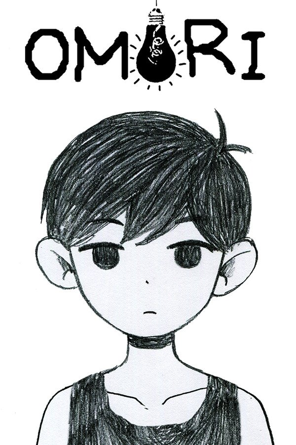
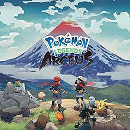

Before this, I suggest that you refer to this webpage to understand why I believe this is a healthy way of thinking: Link

Persona 5 Royal is a JRPG (Japanese Role Playing Game) that takes place in Tokyo, Japan. You play as a teenage boy who was falsely accused of assault and are under probation. This game has many aspects of societal issues and showing the world your true self. This game gives you the feeling of being a hero in the shadows. There are many charming characters and an amazing soundtrack. If you want an expirience not too different from your own life, but at the same time, one of the most interesting and fun story based games, play Persona 5 Royal.
OMORI is an RPG with similar gameplay to the classic video game EARTHBOUND. It follows a young boy and his group of friends in two worlds, one being real though wild an fun, and one being a dream based on the past with a very wacky and fun tone. The gameplay uses emotions as a gameplay mechanic where the three main emotions (Anger, Sadness, Happiness) have their own properties that add a new layer of strategy to the battles. If you want a fun game to make you feel happy, but also incredibly sad, this is the game for you. Though do be warned, this game dives into many deep topics, such as depression, as Sunny(the main character) tries to remember something that he had forgotten.
Here is the link on Steam
Almost everyone knows about the Pokemon series. The player is a young trainer who battles with really interesting creatures with the goal to become the champion. Unlike the usual Pokemon game, the goal in Legends Arceus is not to be the very best, it is to research every Pokemon, and understand yourself. You play as a fifteen year old who came from a space-time rift, and were transported into the past by Arceus, the Pokemon equivalent of God. This game makes you feel the most immersed in the Pokemon world than any other, and if you want to truly feel like someone on a journey in ancient times, gong through trials and harships to prove your worth to the world, play Legends Arceus.
While these games are able to make you feel more free and fun, it is important to have a balance, and not overdue it. If this is the only thing on your mind 24/7, that is known as an addiction, and that is unhealthy, and not sociably acceptable. Refer to this website for more information on the topic: Link
Thank-you for visiting this webpage, click the button for an extra thank-you, and of course, if none of these games are able to make someone feel fun or excitement, They always have Tetris